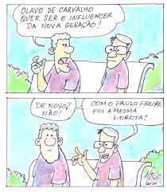
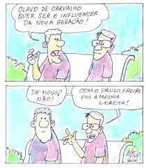

BIOGRAFIA PAULO FREIRE

Paulo Reglus Neves Freire nasceu em 19 de setembro de 1921, na cidade de Recife, capital de Pernambuco. Filho, junto com seus dois irmãos e uma irmã, de um policial militar e de uma dona de casa, Paulo Freire ficou órfão de pai aos treze anos. Sua educação inicial contou com o ingresso no Colégio Oswaldo Cruz, em Recife, por meio de bolsa concedida pelo diretor. Mais tarde, Freire tornou-se auxiliar de disciplina e, após formação, professor de Língua Portuguesa.
Foi um educador, escritor e filósofo pernambucano. Tendo sua formação inicial em Direito, Freire desistiu da advocacia e atuou durante o início de sua carreira como professor de Língua Portuguesa no Colégio Oswaldo Cruz, instituição em que o professor havia concluído o Ensino Básico. Freire também trabalhou para o Serviço Social da Indústria (SESI) como diretor do setor de educação e cultura, além de ter lecionado Filosofia da Educação na então Universidade de Recife.
No dia 2 de maio de 1997, Paulo Freire morreu, aos 76 anos, após passar por uma angioplastia e apresentar um complexo quadro de saúde devido a problemas no sistema circulatório. Em vida e postumamente, o professor Paulo Freire foi condecorado com 48 títulos honoríficos.
Em todo o mundo, cerca de 350 escolas e instituições, como bibliotecas e universidades, levam o seu nome como forma de homenagem. Em 2005, a deputada Luiza Erundina criou um projeto de lei para reconhecer Paulo Freire como Patrono da Educação Brasileira. O projeto de lei somente sancionado em 2012, por meio da Lei 12.612/12, pela então presidente Dilma Rousseff.
QUADRINHOS
 

CARICATURA